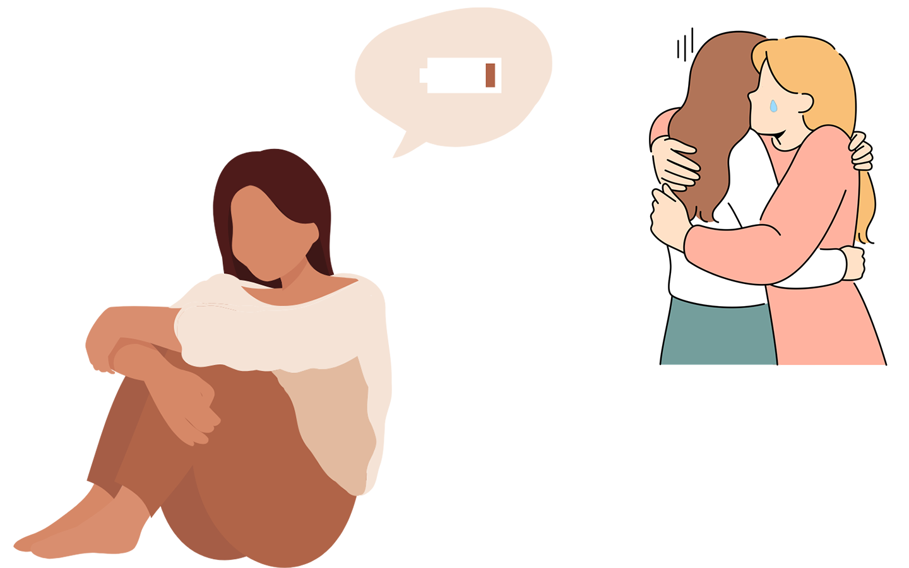

あなたは。。
見抜く力あり！
毒彼はねのけタイプ
あなたは慎重派でしっかりしたタイプ。危険な毒彼は見破って距離を置けそう。だけど仲間のサポートやチームを大事にするあなただから、嫌な思いをしても自分でなんとかしようと相談をためらってしまうことがあるかも。困ったときは迷惑など気にせず、人を頼ることも大切！
自分の写真が勝手に拡散されていないかチェック！
知ってる？こんなひどいことがあるんだよ！
あなたの天敵 その１
「気を付ける」なんて不可能
街中での盗撮
卑劣な盗撮、気をつけろなんて言われても無理...。2023年に撮影罪ができて、刑法で罰されるようになったよ。
被害に遭った人に責任や原因があるわけではない。
「このくらいのこと」と思わずに、盗撮は犯罪だからどんどん警察に届けて良い被害です。
気を付けていたのに被害に遭うなんてと動揺することもあるかもしれない...。被害に遭った人の責任では全くないよ！
あなたの天敵 その２
代わりに頑張りすぎてない？
周囲のケア疲れ

頼れるあなただから、友達や周囲から被害を打ち明けられたり、毒彼についての相談をされたりするかも。
被害に遭った人を責めずに話を聞いてサポートすることは大変だよね。被害の話を聞くことは、被害にあった本人でなくても疲れたり、傷ついたりすることがある。
話を聞く側の人も、さらに他の人に頼ることが大切です。
周りに困っている友達がいたら、beMEの情報をシェアしてね。相談先に繋げるだけでも十分なサポートだよ！一人で背負わないで、いろんな人に頼ってね。
beMEは高度なセキュリティと顔認証を利用して、本人以外が拡散について調べられないようにしているよ。
拡散被害がないかどうか無料でチェックを。